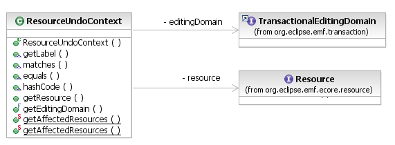

One of the advantages of the Eclipse Operation History API is its ability to implement a not-exactly-linear undo model, in which different operations executed on the same history are only partially or not at all ordered, according to whether their contexts are dependent. The IUndoContext API effectively implements multiple undo "stacks" in a single history.
The workspace editing domain API provides a ResourceUndoContext that tags EMF operations with the Resources in the resource set that they affect. Thus, in a single editing domain (on a single operation history), editors on different resources can maintain separate undo stacks on the Edit menu. Operations that affect multiple resources will appear in the Undo menu action for multiple editors. Operations that affect only a single resource will not.

[as SVG]
The IWorkspaceCommandStack listens to the execution of operations on its IOperationHistory and automatically appends ResourceUndoContexts for each resource affected by an operation. It determines affected resources by analysis of Notifications, using the following rules:
Clients can use the ResourceUndoContext.getAffectedResources(List) API to compute the resources affected by a transaction themselves, if they are not using a workspace command stack on their operation history.
An editor that uses a resource context as its editor context will populate its undo and redo menus with operations that affected its resource. The workspace-integrated editor example demonstrates exactly this.